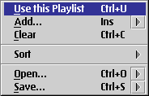
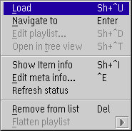

PM123's Playlists
PM123 playlist files always have the extension .LST. They use a special format.
PM123 also understands .MPL files used by WarpAMP and .M3U playlists used over the Internet.
Window features
- direct manipulation
- You can edit the alias name, the start and stop offsets and the source URL by direct manipulation.
- Drag and Drop
- You can use Drag and Drop to rearrange the items in a playlist,
move or copy items between different playlist or playlist manager windows
or drop file or URL objects from other applications. In the latter case only shadows are allowed
since playlists only contain references to the original objects.
You cannot drop PM123 objects on other applications.
Icons
| Status |
File |
Folder |
Playlist |
| Normal |
 |
| Used |
| Current root |
| Current stack |
| Empty |
| Invalid |
Context menu

- Use this playlist
- Activates this playlist.
- Add...
- Add files, files from the Internet for streaming or CD tracks to the playlist.
- Clear
- Clear the whole list.
- Sort
- This submenu has options to sort the playlist by size, playing time, filename or songname.
- Open...
- Loads a saved list.
- Save...
- Saves the list.

- Load
- Loads this file into the player.
- Remove from List
- Removes this file from the playlist.
- Delete file
- Removes selected files from the playlist and deletes this files from your disk.
- Edit Tag
- Edits this file's ID3 tag.
- Delete Tag
- Removes the ID3 tag from this file.